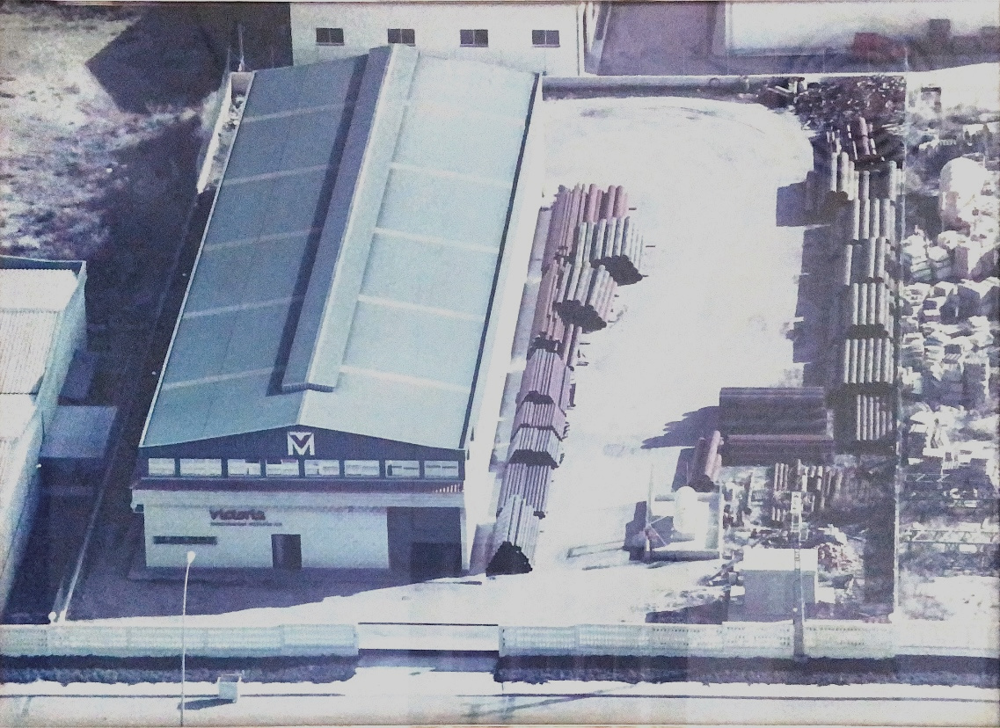

|
 |
Victoria Transformados Metalicos fue fundada en los años 50 por los hermanos Victoria, llamándose en un principio Tuberías Victoria S.L. En el año 1987, ya con los sucesores al mando, pasó a llamarse Victoria Transformados Metalicos S.A, nombre conservado en la actualidad. Teniendo su sede en el polígono industrial de Lorca, Región de Murcia. En el año 1991 se inauguró otra empresa en San Javier, Región de Murcia, hasta el año 2000 que fue cuando se centralizó en una sola en Totana, Región de Murcia, ya que tanto gerentes como trabajadores residían allí. En la actualidad se encuentra en Totana, Región de Murcia, aunque también existe una delegación en Antequera, Málaga, que almacena y distribuye los productos. |